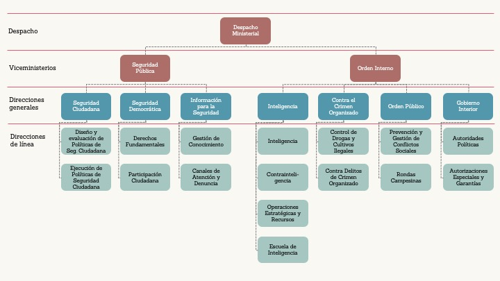

En menos de un año de gobierno, 108 funcionarios han ocupado las 25 unidades orgánicas de línea del Ministerio del Interior.
Como parte del proyecto DeConfianza, el Instituto de Criminología y Estudios sobre la Violencia y desarro.io recopilan y presentan información sobre la estabilidad de funcionarios y directivos del Ministerio del Interior.
4 de julio, 2022
Entre los años 2016 y 2021 la asignación presupuestaria del Ministerio del Interior se incrementó en 25%. Sin embargo, la inseguridad se mantiene de manera sostenida como uno de los problemas más sentidos por la ciudadanía en el Perú. Entre los diversos factores que podrían explicar esta situación (a pesar de que el el sector cuenta con más de S/2 mil millones adicionales destinados a intervenciones para combatir la inseguridad ciudadana) se encuentra la alta rotación de personal en los cargos directivos de la institución.
En tan solo 11 meses de este gobierno, el sector Interior ha tenido 6 titulares, y cada uno de estos cambios ha venido acompañado por variaciones en los distintos viceministerios, direcciones generales y de línea. Estos cambios implican distintas perspectivas en la gestión de los diversos roles y funciones ministeriales, las mismas que recaen en la implementación de las políticas de seguridad ciudadana.
Este informe analiza la estabilidad del cuerpo burocrático del Ministerio del Interior desde el 28 de julio de 2021 en adelante. Se aborda la designación y encargatura de los funcionarios de confianza en las 25 unidades orgánicas responsables de las políticas sectoriales que componen el MININTER: Despacho ministerial (1), viceministerios (2), direcciones generales (7) y direcciones de línea (15).
Organigrama de unidades de línea del MININTER

Entre el 28 de julio del 2021 y la fecha de este informe, el Ministerio del Interior ha tenido 5 Ministros, 15 Viceministros, 37 Directores Generales y 51 Directores de Línea. En total, 108 funcionarios han ocupado las 25 unidades orgánicas de línea del Ministerio en un periodo de solo 11 meses.
El gráfico siguiente sintetiza la situación de las designaciones y encargaturas de los funcionarios en cada una de las unidades orgánicas de línea del MININTER durante el gobierno de Pedro Castillo y para cada periodo ministerial. Las barras representan la duración de los funcionarios en sus cargos, y al señalar cada una se muestran la duración y resoluciones de designación y cese de cada funcionario.
La duración de funcionarios en sus cargos fue particularmente baja en el Viceministerio de Seguridad Pública y durante la gestión de Alfonso Chavarry.
Fuente: Portal de transparencia MININTER, Diario Oficial El
Peruano.
Elaboración: desarro.io, ICEV.
El tiempo promedio de duración de un funcionario o directivo en el Ministerio del Interior, de acuerdo con su cargo, es 81 días. 67 días para un Ministro, 47 días para un Viceministro, 67 días para un Director General y 136 días para un Director de línea. Solamente una de las unidades de línea (la Dirección de Operaciones Estratégicas y Recursos) ha mantenido a su director durante todos los días del presente gobierno.
Solo un funcionario se ha mantenido en su puesto durante los 341 días desde el 28 de julio
Fuente: Portal de transparencia MININTER, Diario Oficial El
Peruano.
Elaboración: desarro.io, ICEV.
El Viceministerio de Seguridad Pública (VSP) es el viceministerio encargado de las políticas, planes, programas y proyectos en materia de seguridad ciudadana. El VSP ha tenido el mayor número de cambios en 11 meses. Ha habido 9 VSP durante este período de gobierno, y el tiempo de duración promedio de un VSP es de 38 días.
Por su parte, el Viceministerio de Orden Interno (VOI), que se encarga de proponer y conducir la política de orden interno del sector Interior en coordinación con la PNP, combatir al crimen organizado, controlar las fronteras, y de luchar contra el tráfico ilícito de drogas y el terrorismo, ha tenido 56 funcionarios y directivos en 11 meses. Ha habido 6 VOI durante este período de gobierno. El tiempo de duración promedio de un VOI es 57 días.
Los viceministros de de Seguridad Pública y de Orden Interno han sido cambiados más veces que el número de ministros desde 28 de julio.
Fuente: Portal de transparencia MININTER, Diario Oficial El
Peruano.
Elaboración: desarro.io, ICEV.
Según datos de El Comercio, en 2019 un director general tenía un promedio de duración de 7 meses y 26 días.1 En el Ministerio del Interior de hoy, ese promedio se ha reducido a 2 meses y 7 días. La designación de 108 funcionarios de línea en tan solo 11 meses de gobierno refleja un nivel preocupante de rotación que tiene consecuencias directas sobre la implementación de políticas públicas. Por un lado, los ministros y viceministros establecen la orientación política del ministerio, alineada a las prioridades del gobierno. Por otro lado, directores generales y directores de línea son quienes transforman esta visión política en realidad a través de acciones concretas.
Un ejemplo del impacto que tiene la rotación sobre la entrega de servicios se evidencia en el bajo nivel de ejecución presupuestal del sector Interior al cierre del primer semestre. Los proyectos de inversión que afectan directamente a la seguridad ciudadana tienen un avance de 18.6% respecto al presupuesto asignado (PIM). Los proyectos de inversión para disminuir los conflictos sociales tienen un avance de 0%. Los recursos COVID para compra de productos farmacéuticos para la PNP tienen un avance de 11.5%.
La ejecución presupuestal en proyectos de inversión (PI) y partidas clave del MININTER se encuentra entre 0% y 20% de sus metas (PIM).
Fuente: Consulta amigable MEF, al 4 de julio de 2022
Elaboración: desarro.io, ICEV.
Resulta urgente transitar hacia la profesionalización de nuestro servicio civil. La evidencia2 3 4 es clara al señalar que la profesionalización tiene múltiples beneficios y un impacto positivo sobre el crecimiento económico, ingreso per cápita y entrega de servicios. Aplicarla en una cartera tan importante como la del sector Interior será clave para poder brindarle a la ciudadanía la tranquilidad que se merece para vivir su día a día.
Para este análisis se elaboró una ficha de sistematización de las resoluciones de designación, encargatura y desvinculación de los funcionarios en las unidades orgánicas de línea del Ministerio del Interior. Estas resoluciones fueron obtenidas del Diario Oficial El Peruano y del Portal de Transparencia del Ministerio del Interior. Los datos para esta publicación pueden consultarse en la siguiente tabla:
| unidad | nombre | apellido | genero | condicion | resol_des | fecha_des | resol_ces | fecha_ces | dias |
|---|---|---|---|---|---|---|---|---|---|
| DM | Juan Manuel | Carrasco Millones | M | Designación | RS N° 068-2021-PCM | 2021-07-30 | RS Nº 112-2021-PCM | 2021-10-06 | 68 |
| DM | Luis Roberto | Barranzuela Vite | M | Designación | RS Nº 132-2021-PCM | 2021-10-07 | RS N° 155-2021-PCM | 2021-11-04 | 28 |
| DM | Avelino Trifón | Guillén Jáuregui | M | Designación | RS N° 156-2021-PCM | 2021-11-04 | RS Nº 022-2022-PCM | 2022-02-02 | 90 |
| DM | Alfonso Gilberto | Chavarry Estrada | M | Designación | RS N° 042-2022-PCM | 2022-02-02 | RS N° 145-2022-PCM | 2022-05-22 | 109 |
| VSP | Nicolás Antonio | Zevallos Trigoso | M | Designación | RS N° 125-2020-IN | 2020-12-11 | RS N° 150-2021-IN | 2021-08-19 | 22 |
| VSP | Gabriela | Paliza Romero | F | Designación | RS N° 152-2021-IN | 2021-08-19 | RS N° 181-2021-IN | 2021-10-17 | 59 |
| VSP | Olga Luz | Chagua Timoteo | F | Designación | RS Nº 182-2021-IN | 2021-10-17 | RS Nº 006-2022-IN | 2022-01-08 | 83 |
| VSP | Jorge Gustavo Félix | Carrión Zavala | M | Designación | RS Nº 007-2022-IN | 2022-01-08 | RS Nº 025-2022-IN | 2022-02-09 | 32 |
| VSP | Eric Franklin | Paz Melendez | M | Designación | RS Nº 026-2022-IN | 2022-02-09 | RS Nº 027-2022-IN | 2022-02-12 | 3 |
| VSP | Oscar William | Gonzales Rabanal | M | Encargatura | RM Nº 0172-2022-IN | 2022-02-12 | RS N° 043-2022-IN | 2022-02-28 | 16 |
| VSP | Pedro Ángel | Vilca Sanchez | M | Encargatura | RM N° 0264-2022-IN | 2022-03-01 | RS N° 075-2022-IN | 2022-04-09 | 39 |
| Dirección General de Seguridad Ciudadana | Maria Esperanza | Diaz Gonzalez | F | Designación | RM N° 0375-2021-IN | 2021-05-26 | RM N° 0724-2021-IN | 2021-09-04 | 38 |
| Dirección General de Seguridad Ciudadana | Alfonso Gilberto | Chavarry Estrada | M | Designación | RM N° 0725-2021-IN | 2021-09-04 | RM N° 1103-2021-IN | 2021-12-14 | 101 |
| Dirección General de Seguridad Ciudadana | Enrique David Quinto | Castro Vargas | M | Designación | RM N° 1104-2021-IN | 2021-12-15 | RM N° 0076-2022-IN | 2022-01-21 | 37 |
| Dirección General de Seguridad Ciudadana | Arturo | Parra Ruiz | M | Designación | RM N° 0077-2022-IN | 2022-01-23 | RM N° 0170-2022-IN | 2022-02-11 | 19 |
| Dirección General de Seguridad Ciudadana | Maria Esperanza | Diaz Gonzalez | F | Designación | RM N° 0171-2022-IN | 2022-02-13 | NA | NA | 141 |
| Dirección de Diseño y Evaluación de Políticas de Seguridad Ciudadana | Rossella Guilianna | Leiblinger Carrasco | F | Designación | RM N° 0178-2021-IN | 2021-03-16 | RM N° 0184-2022-IN | 2022-02-15 | 202 |
| Dirección de Diseño y Evaluación de Políticas de Seguridad Ciudadana | Arturo | Parra Ruiz | M | Designación temporal | RSG N° 0065-2021-IN-SG | 2021-07-26 | RSG N° 0065-2021-IN-SG | 2021-08-08 | 11 |
| Dirección de Diseño y Evaluación de Políticas de Seguridad Ciudadana | Rossana Beatriz | Acuña Delgado | F | Designación temporal | RD N° 029-2022-IN-OGRH | 2022-01-31 | RD N° 029-2022-IN | 2022-02-10 | 10 |
| Dirección de Diseño y Evaluación de Políticas de Seguridad Ciudadana | Peggy Anarcy | Loayza Párraga | F | Designación | RM N° 0185-2022-IN | 2022-02-16 | NA | NA | 138 |
| Dirección de Ejecución de Políticas de Seguridad Ciudadana | Arturo | Parra Ruiz | M | Designación | RM N° 0027-2021-IN | 2021-01-09 | RM N° 0082-2022-IN | 2022-01-22 | 178 |
| Dirección de Ejecución de Políticas de Seguridad Ciudadana | Rossana Beatriz | Acuña Delgado | F | Designación | RM N° 0105-2022-IN | 2022-01-28 | RM N° 0326-2022-IN | 2022-03-12 | 43 |
| Dirección de Ejecución de Políticas de Seguridad Ciudadana | Arnaldo Rubén | Corzo Manrique | M | Designación | RM N° 0327-2022-IN | 2022-03-13 | NA | NA | 113 |
| Dirección General de Seguridad Democrática | Silvia Paulina | Mori Vásquez | F | Designación | RM N° 0463-2021-IN | 2021-06-25 | RM N° 0862-2921-IN | 2021-10-21 | 85 |
| Dirección General de Seguridad Democrática | Victor Manuel | Quinteros Marquina | M | Designación | RM N° 0998-2021-IN | 2021-11-18 | RM N° 0128-2022-IN | 2022-02-01 | 75 |
| Dirección General de Seguridad Democrática | Javier Ernesto | Ruiz-Eldredge Vargas | M | Designación temporal | RD N° 034-2022-IN-OGRH | 2022-02-05 | No está publicada | 2022-04-11 | 65 |
| Dirección de Derechos Fundamentales | Javier Ernesto | Ruiz-Eldredge Vargas | M | Designación | RM N° 1229-2020-IN | 2020-12-23 | RM N° 0768-2022-IN | 2022-06-17 | 324 |
| Dirección de Participación Ciudadana | Gabriela | Paliza Romero | F | Designación | RM N° 0512-2021-IN | 2021-07-05 | RM N° 0664-2021-IN | 2021-08-18 | 21 |
| Dirección de Participación Ciudadana | Alonso | Flores Macher | M | Designación temporal | RSG N° 0077-2021-IN-SG | 2021-08-27 | No está publicada | 2021-09-22 | 26 |
| Dirección de Participación Ciudadana | Analí | Ochoa Oré | F | Designación | RM N° 0777-2021-IN | 2021-09-23 | RM N° 1329-2021-IN | 2021-12-28 | 96 |
| Dirección de Participación Ciudadana | Carlos Manuel | Chávez Silva | M | Designación | RM N° 1330-2021-IN | 2021-12-29 | NA | NA | 187 |
| Dirección General de Información para la Seguridad | Julio César | Mancilla Crespo | M | Designación | RM N° 0265-2021-IN | 2021-04-17 | RM N° 0685-2021 | 2021-08-27 | 30 |
| Dirección General de Información para la Seguridad | Mariana | Llona Rosa | F | Designación | RM N° 0686-2021-IN | 2021-08-28 | RM N° 1036-2021-IN | 2021-11-25 | 89 |
| Dirección General de Información para la Seguridad | Victor Manuel | Quinteros Marquina | M | Designación temporal | RD N° 0522-2021-IN-OGRH | 2021-11-26 | RD N° 001-2022-IN-OGRH | 2021-12-31 | 35 |
| Dirección General de Información para la Seguridad | Walter Edmundo | Orellana Blotte | M | Designación | RM N° 0040-2022-IN | 2022-01-15 | RM N° 0131-2022-IN | 2022-02-03 | 19 |
| Dirección General de Información para la Seguridad | Julio César | Mancilla Crespo | M | Designación temporal | RD N° 0033-2022-IN-OGRH | 2022-02-05 | No está publicada | 2022-05-30 | 114 |
| Dirección de Gestión del Conocimiento | Alonso | Flores Macher | M | Designación | RM N° 0251-2021-IN | 2021-04-14 | RM N° 0813-2021-IN | 2021-10-01 | 65 |
| Dirección de Gestión del Conocimiento | Mariana | Llona Rosa | F | Designación temporal | RD N° 0448-2021-IN-OGRH | 2021-10-02 | No está publicada | 2021-11-25 | 54 |
| Dirección de Gestión del Conocimiento | Julio César | Mancilla Crespo | M | Designación temporal | RD N° 0523-2021-IN-OGRH | 2021-11-26 | No está publicada | 2021-12-28 | 32 |
| Dirección de Gestión del Conocimiento | Cecilia Rosa | Caparachín Puente | F | Designación | RM N° 1331-2021-IN | 2021-12-29 | RM N° 0265-2022-IN | 2022-03-01 | 62 |
| Dirección de Gestión del Conocimiento | Manuel Antonio | Moreno Sucre | M | Designación temporal | RD N° 0105-2022-IN-OGRH | 2022-03-02 | RD N° 0136-2022-IN-OGRH | 2022-03-16 | 14 |
| Dirección de Gestión del Conocimiento | Walter Raúl | Arias Tacona | M | Designación temporal | RD N° 0136-2022-IN-OGRH | 2022-03-17 | NA | NA | 109 |
| Dirección de Canales de Atención y Denuncia | Gonzalo Alonso | Sánchez Lorenzo | M | Designación | RM N° 1218-2020-IN | 2020-12-18 | RM N° 0689-2021-IN | 2021-08-27 | 30 |
| Dirección de Canales de Atención y Denuncia | Julio César | Mancilla Crespo | M | Designación | RM N° 0690-2021-IN | 2021-08-28 | NA | NA | 310 |
| VOI | Carlos Enrique | Leon Romero | M | Designación | RS N° 091-2020-IN | 2020-11-19 | RS N° 149-2021-IN | 2021-08-19 | 22 |
| VOI | Olga Luz | Chagua Timoteo | F | Designación | RS N° 151-2021-IN | 2021-08-19 | RS N° 179-2021-IN | 2021-10-17 | 59 |
| VOI | Oscar William | Gonzales Rabanal | M | Designación | RS N° 180-2021-IN | 2021-10-17 | RS N° 043-2022-IN | 2022-02-28 | 134 |
| VOI | Pedro Ángel | Vilca Sanchez | M | Designación | RS N° 044-2022-IN | 2022-02-28 | RS N° 075-2022-IN | 2022-04-09 | 40 |
| VOI | Martín | Gonzales Sánchez | M | Designación | RS N° 075-2022-IN | 2022-04-09 | No está publicada | 2022-05-29 | 50 |
| Dirección General de Inteligencia | Sergio Luis Antonio | Monar Moyoli | M | Designación | RM N° 1251-2020-IN | 2020-12-30 | RM N° 0772-2021-IN | 2021-09-21 | 55 |
| Dirección General de Inteligencia | Martin | Gonzales Sánchez | M | Designación | RM N° 0773-2021-IN | 2021-09-21 | RM N° 0848-2021-IN | 2021-10-15 | 24 |
| Dirección General de Inteligencia | Luis Jesus | Flores Solis | M | Designación | RM N° 0863-2021-IN | 2021-10-22 | RM N° 0314-2022-IN | 2022-03-11 | 140 |
| Dirección General de Inteligencia | Roger | Arista Perea | M | Designación | RM N° 0315-2022-IN | 2022-03-11 | RM N° 0330-2022-IN | 2022-03-14 | 3 |
| Dirección General de Inteligencia | Martín | Gonzales Sánchez | M | Designación | RM N° 0348-2022-IN | 2022-03-17 | RM N° 0446-2022-IN | 2022-03-31 | 14 |
| Dirección General de Inteligencia | Jorge Fernando | Cassanova Cubas | M | Designación | RM N° 0468-2022-IN | 2022-04-08 | NA | NA | 87 |
| Dirección de Inteligencia | Alberto | Trigoso Zagaceta | M | Designación | RM N° 0114-2014-IN | 2014-03-03 | NA | NA | 341 |
| Dirección de Contrainteligencia | Jorge Maximiliano | Alvarado Oyola | M | Designación | RM N° 1147-2020-IN | 2020-12-11 | RM N° 1032-2021-IN | 2021-11-24 | 119 |
| Dirección de Contrainteligencia | Arcenio Alfonso | Dominguez Franco | M | Designación | RM N° 1033-2021-IN | 2021-11-24 | NA | NA | 222 |
| Dirección de Operaciones Estratégicas y Recursos | Victor Manuel | Seguier Rosas | M | Designación | RM N° 0029-2021-IN | 2021-01-11 | NA | NA | 341 |
| Escuela de Inteligencia | Bertha Trinidad | Santillán Urbina | F | Designación | RM N° 1048-2020-IN | 2020-11-25 | RM N° 0632-2022-IN | 2022-05-16 | 292 |
| Dirección General Contra el Crimen Organizado | Rafael Eduardo | Castillo Alfaro | M | Designación | RM N° 1070-2020-IN | 2020-11-30 | RM N° 0709-2021-IN | 2021-09-02 | 36 |
| Dirección General Contra el Crimen Organizado | Erik Tomás | Moreno Luna | M | Designación | RM N° 0719-2021-IN | 2021-09-05 | No está publicada | 2021-10-15 | 40 |
| Dirección General Contra el Crimen Organizado | Eduardo Mesías | Vergaray Van Meerbeck | M | Designación | RM N° 0837-2021-IN | 2021-10-15 | RM N° 0225-2022-IN | 2022-02-22 | 130 |
| Dirección General Contra el Crimen Organizado | Victor Hugo | Meza Gil | M | Designación temporal | RD N° 0025-2022-IN-OGRH | 2022-01-26 | RD N° 0025-2022-IN-OGRH | 2022-01-28 | 2 |
| Dirección General Contra el Crimen Organizado | Silvia Elisa Isabel | Abázalo Jara | F | Designación | RM N° 0226-2022-IN | 2022-02-22 | No está publicada | 2022-06-26 | 124 |
| Dirección de Control de Drogas y Cultivos Ilegales | Carlos Manuel | Chavez Silva | M | Designación | RM N° 1146-2020-IN | 2020-12-11 | No está publicada | 2021-09-24 | 58 |
| Dirección de Control de Drogas y Cultivos Ilegales | Sergio Luis Antonio | Monar Moyoli | M | Designación | RM N° 0775-2021-IN | 2021-09-25 | RM N° 0800-2021-IN | 2021-09-29 | 4 |
| Dirección de Control de Drogas y Cultivos Ilegales | Walter Cesar | Olivos Romano | M | Designación | RM N° 0894-2021-IN | 2021-10-28 | NA | NA | 249 |
| Dirección Contra Delitos de Crimen Organizado | Jorge Luis | Moreno Laureano | M | Designación | RM N° 1319-2020-IN | 2020-12-30 | No está publicada | 2021-09-04 | 38 |
| Dirección Contra Delitos de Crimen Organizado | Erik Tomás | Moreno Luna | M | Designación | RM N° 0719-2021-IN | 2021-09-05 | RM N° 0983-2021-IN | 2021-11-14 | 70 |
| Dirección Contra Delitos de Crimen Organizado | Victor Hugo | Meza Gil | M | Designación | RM N° 0984-2021-IN | 2021-11-15 | RM N° 0455-2022-IN | 2022-04-04 | 140 |
| Dirección Contra Delitos de Crimen Organizado | Veronica | Ayala | F | Designación temporal | RD N° 0015-2022-IN-OGRH | 2022-01-17 | RD N° 0015-2022-IN | 2022-01-21 | 4 |
| Dirección General de Orden Público | Héctor German | Chávez Estremadoyro | M | Designación | RM N° 0453-2020-IN | 2021-07-09 | RM N° 0720-2021-IN | 2021-09-04 | 38 |
| Dirección General de Orden Público | Miguel Alberto | Poquioma Ángeles | M | Designación | RM N° 0721-2021-IN | 2021-09-05 | RM N° 1021-2021-IN | 2021-11-23 | 79 |
| Dirección General de Orden Público | Manuel Regner | Ríos Estrada | M | Designación | RM N° 1022-2021-IN | 2021-11-23 | NA | NA | 223 |
| Dirección de Prevención y Gestión de Conflictos Sociales | Manuel Regner | Ríos Estrada | M | Designación | RM N° 0289-2018-IN | 2017-03-01 | No está publicada | 2021-09-22 | 56 |
| Dirección de Prevención y Gestión de Conflictos Sociales | Eduardo Ernesto | Cevallos Arrunátegui | M | Designación | RM N° 0781-2021-IN | 2021-09-23 | NA | NA | 284 |
| Dirección de Rondas Campesinas | Gorge | Farfán Martínez | M | Designación | RM N° 0772-2017-IN | 2017-11-13 | No está publicada | 2021-09-15 | 49 |
| Dirección de Rondas Campesinas | Carlos | Zelada Yzquierdo | M | Designación | RM N° 0767-2021-IN | 2021-09-16 | NA | NA | 291 |
| Dirección General de Gobierno Interior | Marco Antonio | Maldonado Gutarra | M | Designación | RM N° 0784-2020-IN | 2020-10-31 | RM N° 0734-2021-IN | 2021-09-08 | 42 |
| Dirección General de Gobierno Interior | Jose Segundo | Rafael Heredia | M | Designación | RM N° 0735-2021-IN | 2021-09-09 | RM N° 0228-2022-IN | 2022-02-28 | 172 |
| Dirección General de Gobierno Interior | Manuel Regner | Ríos Estrada | M | Designación temporal | RD N° 0085-2022-IN-OGRH | 2022-02-23 | RD N° 085-2022-IN | 2022-02-28 | 5 |
| Dirección General de Gobierno Interior | Sergio Isaías | Cruz Hilacondo | M | Designación | RM N° 0258-2022-IN | 2022-03-01 | RM N° 0525-2022-IN | 2022-04-21 | 51 |
| Dirección de Autoridades Políticas | Leslie Katherine | Dominguez Zevallos | F | Designación | RM N° 0245-2021-IN | 2021-04-13 | RM N° 0731-2021-IN | 2021-09-08 | 42 |
| Dirección de Autoridades Políticas | Jimmy | Chambi Mestas | M | Designación | RM N° 0732-2021-IN | 2021-09-09 | RM N° 0227-2022-IN | 2022-02-22 | 166 |
| Dirección de Autoridades Políticas | Luis Valery | Capristán Rosas | M | Designación temporal | RD N° 0086-2022-IN-OGRH | 2022-02-24 | RD N° 129-2022-IN | 2022-03-09 | 13 |
| Dirección de Autoridades Políticas | Sergio Isaías | Cruz Hilacondo | M | Designación temporal | RD N° 0129-2022-IN-OGRH | 2022-03-10 | No está publicada | 2022-04-24 | 45 |
| Dirección de Autorizaciones Especiales y Garantías | Eduardo Ernesto | Cevallos Arrunátegui | M | Designación | RM N° 1961-2019-IN | 2019-11-25 | RM N° 0730-2021-IN | 2021-09-08 | 42 |
| Dirección de Autorizaciones Especiales y Garantías | Alex Ernesto | Constantino Senmache | M | Designación | RM N° 0733-2021-IN | 2021-09-09 | RM N° 0190-2022-IN | 2022-02-17 | 161 |
| Dirección de Autorizaciones Especiales y Garantías | Luis Valery | Capristán Rosas | M | Designación | RM N° 0191-2022-IN | 2022-02-17 | NA | NA | 137 |
| Dirección Contra Delitos de Crimen Organizado | Silvia Elisa Isabel | Abázalo Jara | F | Designación temporal | RD N° 0192-2022-IN-OGRH | 2022-04-08 | NA | NA | 87 |
| Dirección General de Seguridad Democrática | Walter José | Maguiña Quinde | M | Designación | RM N° 0479-2022-IN | 2022-04-11 | NA | NA | 84 |
| VSP | Martín | Gonzales Sánchez | M | Encargatura | RM N° 0482-2022-IN | 2022-04-11 | No está publicada | 2022-04-23 | 12 |
| VSP | Ernesto | Fuentes Cole | M | Designación | RS N° 079-2022-IN | 2022-04-23 | NA | NA | 72 |
| Dirección de Autoridades Políticas | Elva Elisa | Mestanza Tarrillo | F | Designación | RM N° 0532-2022-IN | 2022-04-24 | NA | NA | 71 |
| Dirección General de Gobierno Interior | Yover | Navarro Banda | M | Designación | RM N° 0535-2022-IN | 2022-04-25 | RM N° 0746-2022-IN | 2022-06-09 | 45 |
| Dirección General de Gobierno Interior | Juan Antonio | Meyer Velasquez | M | Designación temporal | RD N° 0278-2022-IN-OGRH | 2022-04-23 | No está publicada | 2022-04-25 | 2 |
| Dirección de Inteligencia | Joe Antonino | Modica Boada | M | Designación temporal | RD N° 0313-2022-IN-OGRH | 2022-05-09 | RD N° 0313-2022-IN-OGRH | 2022-05-18 | 9 |
| Dirección Contra Delitos de Crimen Organizado | Carlos Noe | Guillén Enriquez | M | Designación temporal | RM N° 0615-2022-IN | 2022-05-11 | NA | NA | 54 |
| Escuela de Inteligencia | Ricardo Freddy | Truijllo Cornejo | M | Designación | RM N° 0633-2022-IN | 2022-05-16 | NA | NA | 49 |
| Dirección de Diseño y Evaluación de Políticas de Seguridad Ciudadana | Peggy Anarcy | Loayza Párraga | F | Designación temporal | RD N° 0316-2022-IN-OGRH | 2022-05-17 | NA | NA | 48 |
| VOI | Martín Severo | Parra Saldaña | M | Designación | RS N° 113-2022-IN | 2022-05-29 | NA | NA | 36 |
| Dirección General de Información para la Seguridad | Magali Ella | Meza Mundaca | F | Designación | RM N° 0700-2022-IN | 2022-05-31 | No está publicada | 2022-07-03 | 33 |
| Dirección de Autorizaciones Especiales y Garantías | Johanna Alejandrina | Rodriguez Rodriguez | F | Designación | RM N° 0722-2022-IN | 2022-06-03 | RM N° 0749-2022-IN | 2022-06-09 | 6 |
| Dirección General Contra el Crimen Organizado | César Manuel | Vallejos Mori | M | Designación | RM N° 0792-2022-IN | 2022-06-26 | NA | NA | 8 |
| DM | Dimitri Nicolás | Senmache Artola | M | Designación | RS N° 149-2022-PCM | 2022-05-22 | RS N° 179-2022-PCM | 2022-07-03 | 42 |
| Dirección de Derechos Fundamentales | Carlos Manuel | Chávez Silva | M | Designación temporal | RD N° 0451-2022-IN-OGRH | 2022-06-28 | NA | NA | 6 |
| Dirección General de Información para la Seguridad | Carmen Nieves | Berrocal Cuadros | F | Designación | RM N° 0830-2022-IN | 2022-07-03 | NA | NA | 1 |
Fuente: Portal de transparencia MININTER, Diario Oficial El
Peruano.
Elaboración: desarro.io, ICEV.
El Comercio. Directores generales de ministerios duran en sus cargos poco más de medio año https://elcomercio.pe/politica/directores-generales-ministerios-duran-cargos-medio-ano-ecpm-noticia-636613-noticia/↩︎
Evans & Rauch. 1999. Instituciones y desarrollo en la era de la globalización neoliberal.↩︎
Arisi, D., Cortes, A., Delic, D., y Rossi, M. 2021. Knowledge for Results and the Efficiency of Public Agencies in Colombia. Working paper, Interamerican Development Bank: forthcoming.↩︎
Ashraf, N., Bandiera, O. y Lee, S. 2015. Do-gooders and Go-getters: Career Incentives, Selection, and Performance in Public Service Delivery. Working Paper.↩︎